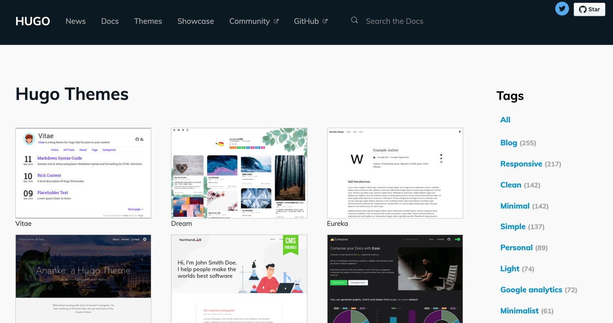
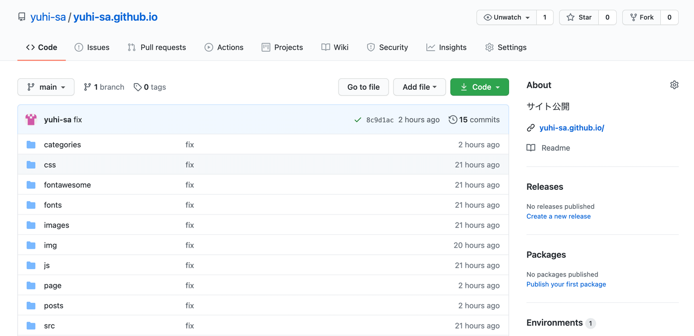

markdownで記事を作成して無料ブログをつくる[Github Pages+Hugo]
はじめに
Github Pagesを用いると，無料でwebサイトを公開できる．静的サイトジェネレータ(今回は，Hugoを利用)と組み合わせることでブログを簡単に作れることを知って，やってみたいなあと思って作ってみた．そのまとめ．Github Pages + 静的ジェネレータの記事はめちゃめちゃわかりやすい記事が何本もあったが，自分のまとめように作ってみた．
全体通して，参考にした記事たち
参考1：Hugo + GitHub Pages（独自ドメイン適応）でサイトを作成・公開する
参考2：【2018年版】Hugoとgithub pagesでブログ作る方法【Circle CIも回します】
Hugoとは
ブログを作成する際，コンテンツの作成や編集のしやすさからWordPressのようなCMSを利用することが多い．しかし，CMSを使用するにはCMS自体のインストールや設定，データベースの準備など少し複雑な作業が必要となる．小規模なブログの場合，HTMLファイルを用いた静的なサイトを作成したほうがコストが低くなる場合がある．とはいえ，HTMLファイルをいちいち手動で作成するのはめんどくさい．そのため，HTMLファイルを半自動生成するようなツール(静的サイトジェネレータ)が存在し，その一つがHugoである．
Hugoは，Go言語で開発された静的サイトジェネレータである．Hugoを使うとデータベースを使用することなく静的なHTMLファイルやCSSファイルによるブログを作成できる．コンテンツは，Markdown形式で記述して，ビルドすると静的なHTMLファイルによるウェブサイトが生成される．
Hugoのメリットしては，
- ビルド，表示処理が早い
- データベース不要で管理が簡単
ということがあげられる．
参考1：静的サイトジェネレータ「Hugo」と技術文書公開向けテーマ「Docsy」でOSSサイトを作る
参考2：Hugoとは？静的サイトジェネレータについて解説
Hugoでサイトを作成
Hugoのインストール
# Homebrew(macOS)の場合
brew install hugo
その他の方法でのインストール方法は，Install Hugo
サイトの作成
hugo new site test # testは好きな名前
cd test
hugo # このコマンドで生成
サーバーでプレビュー
hugo server
http://localhost:1313で確認できる
フォルダの中身の確認
.
├── archetypes # (初期生成されない)Hugo Pipes で処理するファイルを保存するためのファイル
├── config.toml # hugoの設定ファイル
├── content # 記事ファイルを置くファイル
├── data # サイトの全ページから参照したいデータを記述したファイル
├── layouts # テーマファイルを一部修正したいときやレイアウトパーツを追加したいときに利用するファイル
├── public # 生成されるhtmlなどのコード(これを公開する)
├── static # サイト内の静的ファイルを置くファイル
└── themes # テーマファイルを置く
参考1：HUGO のディレクトリ構成
参考2：Directory Structure
テンプレートを利用する
Hugo Themesから好きなテーマを選択し，themesフォルダの中にcloneする．
cd themes
git clone テーマフォルダ
config.tomlに以下の行を追記する．
theme = "選んだテーマ名"

ブログ記事を作成する
cd test
hugo new post/new-post.md
new-post.mdの中身
---
title: "タイトル"
date: 2020-08-16T15:17:23+09:00
draft: false # trueの場合は表示されない
tags: ["python", "ros"]
---
あとは，記事をmarkdownで記載
- hugoコマンドで、public以下に静的ファイルが生成
cd test
hugo
Github Pages
Githubにリポジトリを作成する
Githubの画面右上のプラスアイコン「+」をクリックし，「New repository」を選択する． フォルダ名は，「アカウント名.github.io」にする． 公開URLは https://アカウント名.github.io となる． 
参考：自分で作ったWebページをインターネット上に公開しよう！
publicフォルダをここに上げる．
Github Pagesではフォルダ直下のhtmlファイルしか，公開してくれないため，hugoで作成したtestフォルダ内のpublicフォルダを「アカウント名.github.io」にアップロードする． Githubへのアップロード方法は，初心者用：GitHubにファイルをアップロードする方法（超基本） を参考． testフォルダ自体は，別のリポジトリを作成してそちらで管理する.もしくは，branchで分ける．
その他
hugo 実行方法
ローカルのサーバーで確認
hugo server
ローカルのサーバーで確認(ドラフトも対象)
hugo server -D
latex 数式を使うための編集
/layouts/partials/add_mathjax.htmlを作成
<script>
MathJax = {
tex: {
inlineMath: [['$', '$'], ['\\(', '\\)']]
}
};
</script>
<script id="MathJax-script" async src="https://cdn.jsdelivr.net/npm/mathjax@3/es5/tex-chtml.js"></script>
/layouts/partials/site-header.htmlに追記
{{ partial "add_mathjax.html" . }}
google Analytics
config.tomlに以下の行を追加
googleAnalytics = "測定ID"
Google Analyticsとの連携のための組み込みテンプレート({{ template “_internal/google_analytics_async.html” . }})が古いため変更を追加
layouts/partials/head.htmlを編集
- {{ template "_internal/google_analytics_async.html" . }}
+ {{- partial "analytics" . -}}
layouts/partials/analytics.htmlを作成
{{ if not .Site.IsServer }}
{{ with .Site.GoogleAnalytics }}
<!-- Global site tag (gtag.js) - Google Analytics -->
<script async src="https://www.googletagmanager.com/gtag/js?id={{ . }}"></script>
<script>
window.dataLayer = window.dataLayer || [];
function gtag(){dataLayer.push(arguments);}
gtag('js', new Date());
gtag('config', '{{ . }}');
</script>
{{ end }}
{{ end }}
参考：Hugoで未だ対応していないgtag.jsを利用して Googleアナリティクスする
Sitemapを作成
layouts/sitemap.xmlを作成
<urlset xmlns="http://www.sitemaps.org/schemas/sitemap/0.9">
{{ range .Data.Pages }}{{ if .IsPage }}
<url>
<loc>{{ .Permalink }}</loc>
{{ if not .Lastmod.IsZero }}
<lastmod>{{ safeHTML ( .Lastmod.Format "2006-01-02T15:04:05-07:00" ) }}</lastmod>
<changefreq>weekly</changefreq>
{{ end }}
</url>
{{ end }}{{ end }}
</urlset>
layouts/robots.txtを作成
Sitemap : {{ $.Site.BaseURL }}sitemap.xml
config.tomlを編集
enableRobotsTXT = true
url/sitemap.xmlで表示される． https://yuhi-sa.github.io/sitemap.xml